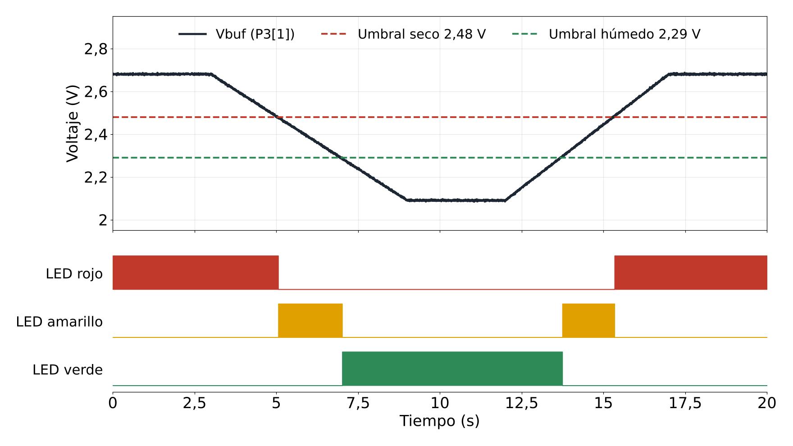

¿Cómo se clasifica hoy una muestra de suelo?
Cada muestra se mide con sensor y multímetro, y su rango se busca en una tabla: es lento y los rangos cambian en cada práctica.
| Requisito | Valor mínimo aceptable |
|---|---|
| Estados | 3: seco, semihúmedo y húmedo |
| Cambiar los límites | Sin computador ni reprogramar |
| Procesamiento | 100 % analógico; la CPU solo informa |
| Proteger la PSoC | Resistir 12 V conectados por error |
| Conexión a la PSoC | Enchufar, nunca soldar (es prestada) |
| Costo de fabricación | ≤ USD 20 por 2 tarjetas |
Diseño ágil: construir, medir y aprender
Construimos lo mínimo que se pudiera probar, lo medimos y lo aprendido decidió el paso siguiente, hasta el producto mínimo viable (PMV).
Cada vuelta deja una lección que cambia la siguiente versión.
| Iteración | Construimos | Medimos | Aprendimos |
|---|---|---|---|
| P1 Explorar | Un generador de ondas con el DAC de la PSoC | Con una carga, la señal se cae | Una salida débil necesita un seguidor |
| P2 Entender | Una entrevista al usuario | Cómo clasifica hoy y qué le cuesta | Quiere 3 estados y límites que cambie él |
| P3 Proponer | Semáforo con límites fijos en el código | Cambiar un rango obliga a reprogramar | Los límites deben salir de perillas |
| P4 PMV | Tarjeta con perillas, fresada en CNC | Seco 2,68 V → rojo; húmedo 2,09 V → verde | Funciona, pero no se puede producir en serie |
| P5 Industrial | Tarjeta para fabricar en JLCPCB | 0 errores de diseño; USD 19,75 | Fabricar en serie también es diseñar |
Cómo decide la tarjeta
Más seco = más voltaje. La tarjeta lo compara con dos límites fijados con perillas; todo es analógico y la CPU solo avisa al PC.
1. Sensor
Seco ≈ 2,7 V; húmedo ≈ 2,1 V2. Protección
Con 12 V en el cable, a la PSoC llegan 5,2 V3. Seguidor
Copia la señal sin cargar al sensor4. Comparadores
Contra los límites de las dos perillas5. Semáforo
Enciende un solo LED
Simulación: al agregar agua el voltaje cruza los límites y el LED pasa de rojo a amarillo y a verde.
| Voltaje del sensor | Estado | LED |
|---|---|---|
| Mayor que el límite de seco | Seco | Rojo |
| Entre los dos límites | Semihúmedo | Amarillo |
| Menor que el límite de húmedo | Húmedo | Verde |
Ejemplo: con límites de 2,5 V y 2,2 V, una muestra de 2,35 V enciende el amarillo.
La perilla mueve cada límite entre 1 y 4 V, así cada práctica usa sus propios rangos sin reprogramar.
El PMV (Proyecto 4) con suelo real
Fresamos la tarjeta en la CNC del laboratorio, soldamos los componentes y la probamos con muestras de suelo seco y húmedo.

a. Fabricación: la CNC del laboratorio fresa las pistas en la placa de cobre.

b. El PMV midiendo una muestra:
| Prueba | Resultado | ¿Cumple? |
|---|---|---|
| Suelo seco | 2,68 V → LED rojo | Sí |
| Suelo húmedo | 2,09 V → LED verde | Sí |
| Medir el sensor sin seguidor | El multímetro bajó la señal de 2,68 a 2,50 V | No: se agregó el seguidor |
| 12 V en el cable (simulación) | 5,19 V con Schottky; 5,64 V con 1N4007 | Sí, con Schottky |
| Separación entre pistas | 0,84 mm (mínimo 0,6 mm) | Sí |
Lo que aprendimos: el circuito funciona, pero los cables se sueltan y soldar a mano no se repite en serie.
Proyecto 5: la tarjeta lista para fabricar
Rediseñamos la tarjeta para que una fábrica (JLCPCB) la produzca y la ensamble, con un socket donde la PSoC se enchufa sin soldarla.

Render 3D (80 × 62 mm): la PSoC se enchufa en los conectores negros; la fábrica pone los componentes pequeños.
| Característica | P4 · PMV | P5 · Industrial |
|---|---|---|
| Quién la fabrica | Nosotros, en la CNC | JLCPCB |
| Componentes | Grandes, a mano | Pequeños (SMD), por máquina |
| Capas de cobre | 1 | 2, con plano de tierra |
| Conexión a la PSoC | Cables sueltos | Socket: se enchufa |
| Revisión del diseño | A simple vista | Reglas automáticas: 0 errores |
Costo real cotizado para 2 tarjetas ensambladas: USD 19,75 (límite USD 20, línea roja)
1,01 = montaje; 0,72 = conectores. Con conectores completos de 2 × 26 pines costaba USD 20,32: dejamos solo los 12 pines que se usan.
Conclusiones
- Resolvimos el problema: clasifica al instante y sin PC (seco → rojo, húmedo → verde).
- Escuchar al usuario cambió el diseño: los límites fijos pasaron a perillas.
- Medir evitó errores: el efecto de carga nos llevó al seguidor.
- Fabricar en serie es otro diseño: el presupuesto obligó a rediseñar el conector.
- Antes del pedido: confirmar con calibrador las filas de la PSoC (20,32 mm) y la orientación de los LED.
 Video
Video